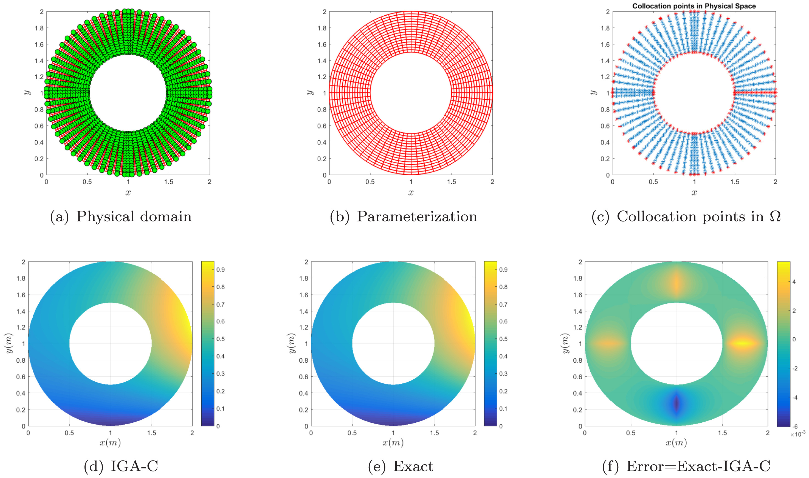
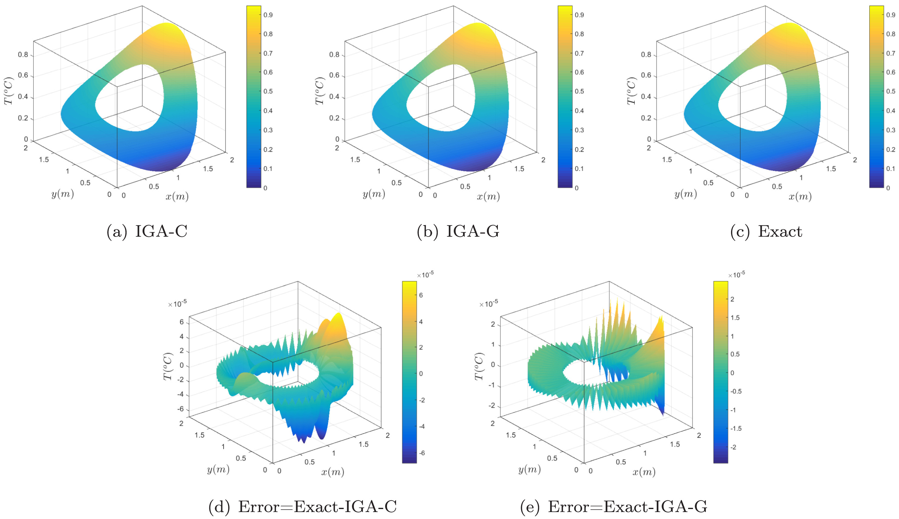
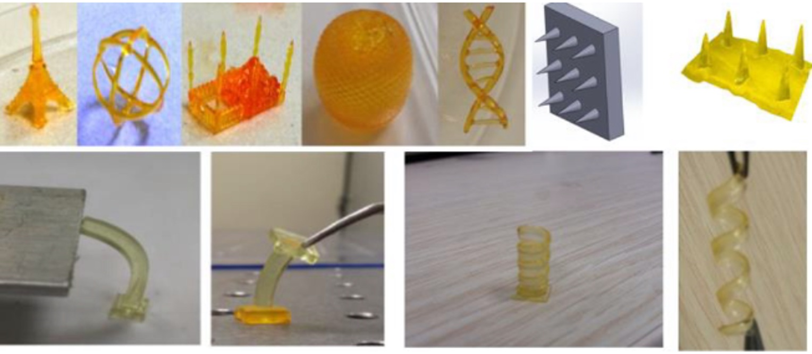

PhD · Mechanical Engineering
City University of Hong Kong · 2016–2022
Lecturer in Mechanical Engineering at The University of Hong Kong. My work connects computational analysis, advanced manufacturing, and project-based engineering education.
My academic background spans mechanical engineering and industrial and manufacturing engineering. My research interests include isogeometric collocation methods, thermal analysis, CAD/CAE, additive manufacturing, and reverse engineering. Alongside research, I teach engineering courses and supervise postgraduate capstone projects.
City University of Hong Kong · 2016–2022
Bilkent University, Turkey · 2013–2015
University of Engineering and Technology, Lahore · 2007–2011
Research on isogeometric collocation methods and analysis-suitable parameterization, including PDE-based and solution-dependent approaches.
Work on thermal analysis with spatially varying conductivity, general constraints, internal heat sources, and space-time formulations.


Research on process modeling and the fabrication of polymer microneedles using DLP-based projection stereolithography.

Principal Investigator for “Beyond Reality: Embodied-GenAI Concentric Learning for Pedagogical AI in Immersive VR,” supported through a Teaching Development and Language Enhancement Grant with an approved budget of HKD 250,000.
Zulfiqar Ali and Weiyin Ma · Engineering Analysis with Boundary Elements · 2025
Abid Ullah, Mussadiq Shah, Zulfiqar Ali, Karim Asami, Asif Ur Rehman, and Claus Emmelmann · International Journal of Applied Ceramic Technology · 2025
Zulfiqar Ali and Weiyin Ma · Computer Aided Geometric Design · 2021
Zulfiqar Ali, E. Buğra Türeyen, Yiğit Karpat, and Melih Çakmakcı · Procedia CIRP · 2016
Supervision of master's capstone projects and development of practical engineering learning activities.
Course development support of HKD 35,000 for hands-on projects in Mechatronics System Engineering.
I welcome enquiries about research collaboration, computational engineering, additive manufacturing, and engineering education.
zulfiali@hku.hk
Hong Kong